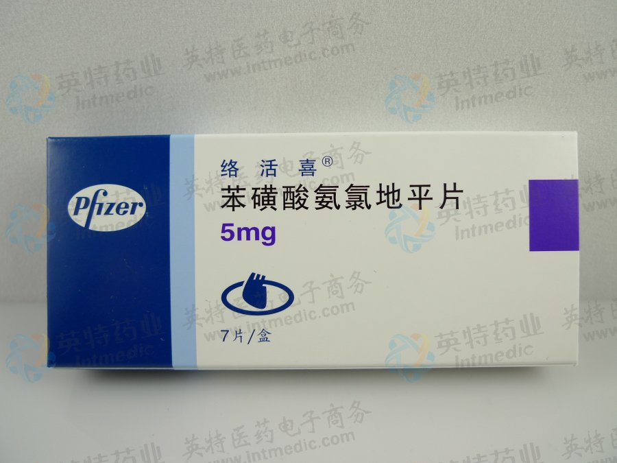

电话：024-1931201
 该品在10mg/日的剂量范围内有良好的耐受性，大多数不良反应是轻中度的。该品因不良反应而停药的仅为1.5%，与安慰剂没有明显差别（约1%）。最常见的不良反应是头痛和水肿。 发生率 >1%的剂量相关性不良反应如下：水肿、头晕、潮红和心悸。 与剂量关系不明确，但发生率超过1.0%的不良反应如下：头痛、疲倦、恶心、腹痛和嗜睡。以上不良反应中，水肿、潮红、心悸和嗜睡在女性中的发生率超过男性。 以下不良事件发生率? 1%但> 0.1%，与药物的因果关系不明确： 一般：过敏反应，虚弱，背痛，潮热，不适，疼痛，僵硬，体重增加； 心血管：心律失常（包括心动过速、心动过缓或房颤），胸痛，低血压，外周缺血，昏厥，体位性头晕，体位性低血压和脉管炎； 中枢和外周神经系统：感觉减退，外周神经病，感觉异常，震颤，眩晕； 胃肠道：厌食症，便秘，消化不良，吞咽困难，腹泻，胃胀气，胰腺炎，呕吐，牙龈增生； 骨骼肌系统：关节痛，关节炎，肌肉痛性痉挛，肌痛； 精神：性功能障碍，失眠，紧张，抑郁，梦魇，焦虑，人格解体； 皮肤及附属物：血管性水肿，红斑，搔痒，皮疹，斑丘疹； 特殊感觉：视觉异常，结膜炎，复视，眼痛，耳鸣； 泌尿系统：尿频，排尿障碍，夜尿； 自主神经系统：口干，盗汗； 代谢和营养：高血糖，口渴； 造血系统：白细胞减少症，紫癜，血小板减少症。 以下不良事件的发生率? 0.1%：心衰，脉搏不规则，期外收缩，皮肤变色，风疹，皮肤干燥，皮肤炎，脱发，肌肉无力，颤搐，共济失调，张力过高，偏头痛，皮肤冷湿，淡漠，激动，健忘，胃炎，食欲增加，稀便，咳嗽，鼻炎，排尿困难，多尿，嗅觉到错，味觉颠倒，视觉调节失常，眼干燥症。 其它偶发反应如心肌梗死和心绞痛则不能分辨是药物作用还是疾病状态。常规实验室检查项目没有明显变化，未发现血钾、血糖、甘油三脂、总胆固醇、高密度脂蛋白（HDL）、尿酸、血尿素氮或肌酐出现有意义的变化。药物上市后，用药人群中偶有男性乳腺发育的报道，但与药物的因果关系不明；部分病例中黄疸和肝酶升高（常伴有胆汁淤积和肝炎）较严重，需要住院治疗。